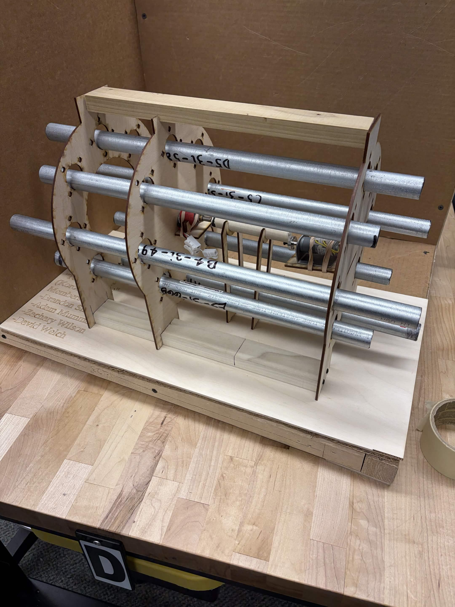
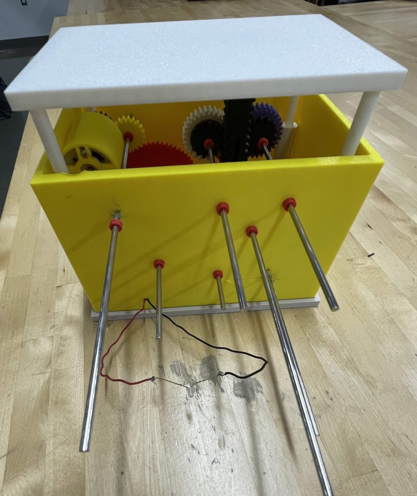
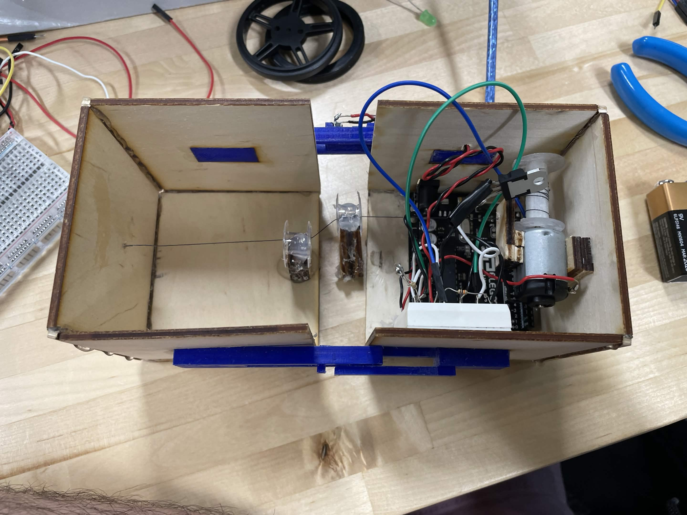

Independent Projects
Independent Projects
Automatic Chime Machine
Timeline: Jan - May 2026 Institution: Rochester Institute of Technology Team: Three mechanical engineers, one interdisciplinary engineer
Chime machine that played the tetris theme song by striking metal chimes.
Four solenoids rotated about a central axis to hit eight notes and play a 40-second section of the tetris them song.

Chime machine prior to full electronic assembly with hung chimes
Documentation:
Video documentary of the project
Evaluating the Effectiveness of a Rack and Pinion Mechanism in Generating Power Using Variable Height Road Panels
Timeline: Apr 2024 - May 2025 Institution: Loudoun Academy of Engineering and Technology Team: Two interdisciplinary engineers
Mode of energy generation designed to harvest wasted energy from cars braking approaching stop signs.
A rack and pinion was connected to a gear train and generator using two sprag clutches to harvest energy on the up and down stroke of a depressing road pannel.

Scale model of the mechanism used for testing
Documentation:
Original unpublished research paper
Therapeutic Forearm and Wrist Orthosis for The Treatment of Carpal Tunnel Syndrome
Timeline: Feb - Apr 2024 Institution: Loudoun Academy of Engineering and Technology Team: Four interdisciplinary engineers
Wrist brace for treating carpal tunnel syndrome with pressure and heating features.
A flexible hand and wrist brace was connected to a fabric sleave that would wrap around a patients forearm. The sleave contained heating pads and inflating sacs to soothe the region.
ACLETS CubeSat Mission
Timeline: Aug - Oct 2024 Institution: Loudoun Academy of Engineering and Technology Team: Roughly 15 interdisciplinary engineers
Planned CubeSat mission featuring an electrodynamic tether for propulsion and collect data regarding it.
The structure, components, and mission details were planned on a large team for a small satelite that would use a deployable electrodynamic tether. The mission was ultimately rejected due to NASA regulations regarding propulsion and high projected costs.
Useless Box
Timeline: Apr - Jun 2023 Institution: Loudoun Academy of Engineering and Technology Team: One interdisciplinary engineer / independent
"Useless box" consisting of two cubes that would pull back together upon being slid apart a certain distance.
A winch was used to pull two laser cut boxes together if a microcontroller detected a signal from momentary push buttons that would be pressed when fully extended.

The internal electronics of the useless box.